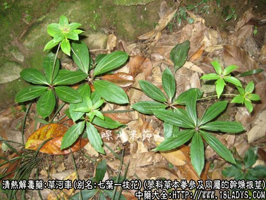
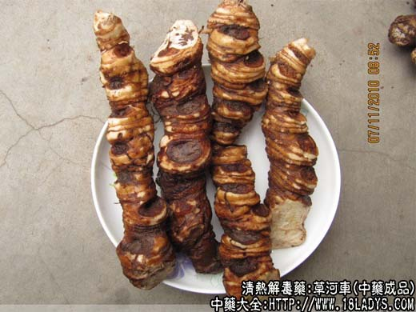
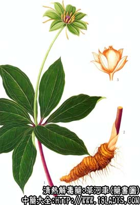

本品为少常用中药。《神农本草经》列为中品。原名紫参。草河车之名始见于清《植物名实图考》。
来源：为蓼科多年生草本植物拳参及其同属植物的干燥根茎。均为野生。
产地：主产于华北、中南、华东等地，全国各地均有分布。
植物形态：为多年生宿根草本。根茎扁圆柱形，弯曲不直，外皮紫棕色。根基叶有长柄，叶片披针形，茎单一或数茎丛生，直立不分枝。茎有节，茎叶互生几无柄或抱茎，叶片披针形或线形，叶鞘筒状膜质。穗状花序，顶生。花白色或粉红色。瘦果三棱形，黑褐色有光泽。
性状鉴别：根茎扁圆柱形，弯曲如虾，长粗如指。表面紫棕色或紫黑色，全体有紧密的细环纹和残留的硬须根或根痕。质坚硬。断面淡粉色。略显粉性，外围有一圈灰白色小点（维管束）。气微，味微苦涩。
以肥壮，内色淡粉，质坚实，少须根者为佳。
炮制：切片，生用。
性味：苦、微寒。
归经：入肝经。
功能：清热解毒，消肿，定惊，止血。
主治：热病惊痫，肠炎，痢疾，痈疽，咳血，衄血，蛇虫咬伤。
注：1、有些地区以百合科多年生草本植物重楼及云南重楼的根茎作草河车用。别名金钱重楼，七叶一枝花或独角莲。主产于广西、广东、云南、贵州、四川等地。其根茎扁圆柱形，结据诶如指状外皮黄褐色至黄棕色，可见数个椭圆形茎痕，遍体有横纹（节），下部有根痕，质坚面硬，断面黄（蜡质）白（粉性）色。气微，味微苦辣，稍有刺激性。能清热解毒，消肿，止痛，治疗乙型脑炎，腮腺炎，扁桃腺炎，百日咳，白喉，跌打损伤，毒蛇咬伤，瘰疖肿毒等症。
2、天津所用独角莲为内蒙古所产之菌类植物的菌核。形如猪苓，但特小儿瘪瘦。
蚤休、七叶一枝花：本品为百合科植物（七叶一枝花）。以根茎入药。
蚤休性微寒，味苦。有小毒，入肝经。功能清热解毒、解痉定惊。
临床应用：1、清热解毒。蚤休苦寒，善于清热解毒消肿。用于：
①热毒壅盛之乳蛾红肿疼痛（急性扁桃腺炎）、腮腺炎、配金银花、连翘、板蓝根、玄参、牛蒡子等药。
②热毒壅结所致疔疮痈毒，红肿焮痛，如痈、疖、乳腺炎等病，常配蒲公英、紫花地丁、赤芍、丹皮、金银花、连翘等药。亦可用鲜品捣烂外敷。
③温病：高热、神昏、抽搐，可见于流行性乙型脑炎等病，用蚤休根茎15克冷开水磨汁服，或配大青叶、知母、钩藤等药。
⑤蛇虫咬伤及痔疮，配紫花地丁，外用。
2、解痉定惊。临床用于小儿发热，惊风抽搐，配钩藤、僵蚕、蚤休之解茎定惊可能与清热解毒及镇静作用有关。
常用量：10～15g，水煎服。外用适量。
禁忌：虚寒阴疽忌用。
蚤休与蒲公英、紫花地丁功能相似，为疮疡要药。治外科阳证，三药同用，可增强清热解毒、消痈散之功。蚤休配大青叶、连翘、板蓝根，治疗和预防流感，瘫痪较好。笔者治疗肝炎，在辨证的基础上加用蚤休10～12g，降转氨酶作用较好，反跳现象少见。
蚤休含蚤休甙，酚性成分、氨基酸等。蚤休对亚洲甲型流感病毒、金黄色葡萄球菌、痢疾杆菌有较强的抗菌作用，对副伤寒杆菌，沙门氏菌、绿脓杆菌有抑制作用，动物实验蚤休有明显的镇咳平喘及镇静作用。
用量：6～15g，治癌用15～30g。
处方举例：1、七叶一枝花汤：七叶一枝花9g、白菊9g、麦冬6g、青木香3g（后下），水煎服。
2、七夏豆根汤：七叶一枝花根头30g、夏枯草30g、山豆根30g，水煎服每日一剂，分三次服完。